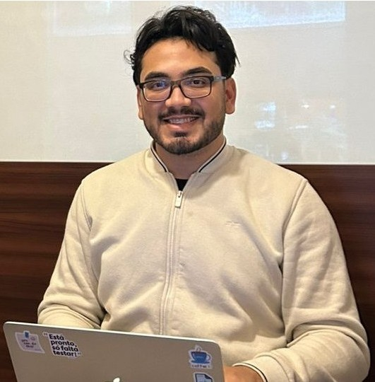

Programador e desenvolvedor de jogos (Unity3D) e tradutor técnico (9 anos, EN↔PT). Habilidades-chave: Design Thinking, Lógica de Programação, localização de jogos, formatação técnica e atenção aos detalhes.
Experiência Profissional
- Programador Júnior — NTT DATA (out/2025 – presente) — desenvolvimento front-end em times ágeis.
- Tradutor Técnico & Formatador (Freelance) — TranslationsNZ.com (out/2016 – presente) — tradução EN↔PT, formatação profissional (Office).
- Estagiário (Processamento de Dados / IA) — LAPROSOLDA (set–out/2025) — extração/validação de OCR, organização de datasets; desenvolvi comparador de planilhas (Java).
- Desenvolvedor de Jogos & Game Designer — Clube UFU (jun/2024 – set/2025) — C#/Unity, GDD, localização PT/EN e prototipagem.
- Professor de Tecnologia — CodeHow (ago–dez/2018) — ensino de programação básica e atividades lúdicas (Scratch, Kodu, Construct).
Formações Acadêmicas e Certificações
- Bacharelado em Ciência da Computação — UFU (mai/2024 – mai/2028, em andamento).
- Tecnólogo em Jogos Digitais — Universidade Positivo (2016 – 2018).
- Especialização: BEPID — Brazilian Educational Program for iOS Development (2015).
- Certificação: EF SET English Certificate 77/100 (C2).
